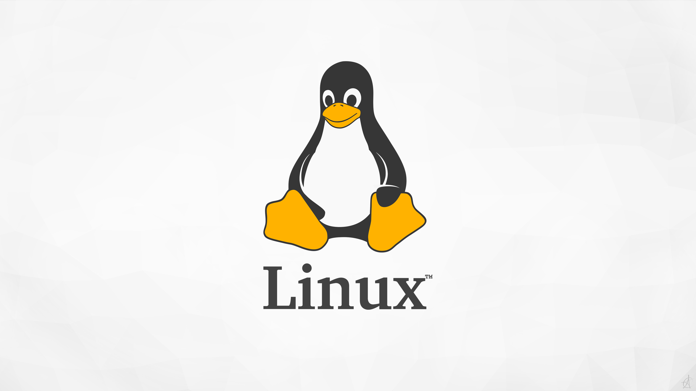

Penjelasan Singkat Tentang Linux
Linux adalah sebuah kernel yang gratis atau bisa digunakan tanpa harus membelinya. Linux merupakan jenis operating system (OS) yang bersifat open source sekaligus gratis. Salah satu kelebihan sistem operasi Linux adalah kamu bisa menggunakan dan mengembangkannya dengan bebas. Biasanya, OS ini dimanfaatkan dalam pengembangan perangkat. Berbeda dengan Windows yang menyasar user dan pemula.
Fungsi Linux adalah sebagai wadah untuk menjembatani komunikasi atau perintah pengguna pada hubungan software dan hardware dalam sebuah perangkat.
Sejarah linux dimulai pada tahun 1991 oleh pria kebangsaan Finlandia bernama Linus Torvalds. Seorang Linus Torvalds muda, tepatnya saat menjadi mahasiswa mulai membagikan source code (kode sumber) kernel linux via internet seukuran disket.
Link ini menuju website resmi Linux Linux.org
